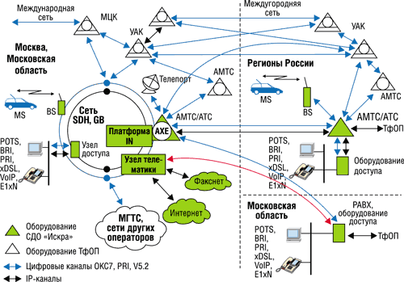
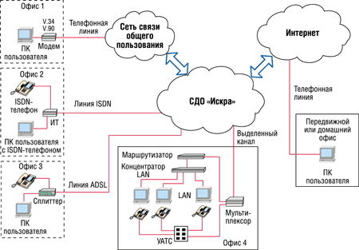
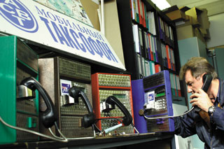

Андрей Ездаков
Последние два десятилетия - период активного внедрения информационно-коммуникационных технологий, бурного роста Интернета - вызвали к жизни разительные перемены во всех сторонах общественной жизни. И сегодня не меньшее значение, чем нефтепроводы, в экономике приобрели каналы передачи, средства хранения и обработки данных и сети связи - все то, что относится к структуре инфокоммуникаций.
Уровень развития инфокоммуникаций решающим образом влияет сегодня на экономику, культуру и политику. Развитие национальной информационно-коммуникационной структуры позволяет удовлетворить информационные потребности общества во всех сферах деятельности, повысить эффективность работы государственных органов, коммерческих структур и производства.
Что касается нашей страны, уже сейчас очевидно, что информационные коммуникации - это наиболее активно и динамично развивающаяся часть экономики, перспективная как для внешних, так и для внутренних инвестиций. В условиях перехода к "информационному обществу" создание современной развитой национальной инфокоммуникационной структуры становится одной из важнейших задач, стоящих перед Россией. Динамичное развитие этой инфраструктуры как части мировой требует создания эффективных современных национальных телекоммуникаций, широкого внедрения ИТ во все сферы жизни, а также разработки, накопления и распространения национального контента.
Нужно отметить, что за последние 10 лет российская инфокоммуникационная отрасль развивалась весьма эффективно. Достижению столь значимых результатов способствовала, во-первых, полная либерализация отрасли, приватизация и развитие конкуренции на рынке услуг связи. Вторым важным фактором стало рациональное применение методов государственного регулирования путем реорганизации системообразующих предприятий, создания благоприятного предпринимательского климата, повышения инвестиционной привлекательности отрасли, все большего соответствия российского законодательства международному.
Сеть делового обслуживания "Искра"
Для создания инфокоммуникационной структуры в масштабах всей страны или отдельного региона нужно научиться грамотно использовать имеющиеся возможности в сочетании с потребностями клиентов. В частности, коммуникационные возможности в масштабах всей России предоставляет цифровая сеть делового обслуживания (СДО) "Искра". Изначально спроектированная как правительственная структура связи для телекоммуникационной поддержки управленческой деятельности руководства страны, республик и регионов, СДО "Искра" хорошо зарекомендовала себя за много лет функционирования.
Помимо традиционных услуг голосовой связи и передачи данных, в результате проведенной модернизации СДО "Искра" теперь предоставляет пользователям широкий спектр современных интегральных телекоммуникационных сервисов. Среди них и видеоконференцсвязь, и высокоскоростной доступ в Интернет, и организация ISDN-каналов, и услуги IP-телефонии, и голосовая почта, и ряд других. Все эти сервисы доступны потребителям через оператора СДО "Искра" - российскую компанию АСВТ (http://www.asvt.ru), работающую на рынке услуг связи 13 лет.
АСВТТелекоммуникационная компания МГП "АСВТ" (затем ОАО "АСВТ") была создана в 1990 г. На ее счету - десятки реализованных крупных телекоммуникационных проектов, в числе которых инфокоммуникационная сеть СДО "Искра" на территории России, радиотелефонная сеть "РусАлтай" в Москве, Московской и Калужской областях, пейджинговая сеть "РусПейдж" в Москве и Московской области, радиотаксофонная сеть на территории Москвы и Московской области, волоконно-оптическая транспортная сеть, сеть высокоскоростной передачи данных и предоставления услуг телематических служб во всех регионах России, сети сотовой связи на базе технологии CDMA в диапазоне 800 МГц в Ставропольском крае и в Тамбовской области, беспроводная сеть стандарта DECT в Астрахани и ряд других. |
Цифровая СДО "Искра" предоставляет комплекс современных услуг связи в Москве и Московской области, в регионах Российской Федерации и странах СНГ. Она построена на основе системных решений междугородней сети "Искра-2" со сложившимися схемой образования коммутационных узлов, планом нумерации абонентов, системой управления и технического обслуживания (рис. 1).
|  |
| Рис. 1. Структура СДО "Искра".
|
Использование в ходе строительства сети правительственной связи цифрового оборудования, а также сохранение технологических решений, изначально заложенных в сеть "Искра-2", позволили создать уникальную в масштабах страны телекоммуникационную структуру. Она действует на основе пакета лицензий Министерства связи РФ, Гостехкомиссии, ФАПСИ и ФСБ, позволяющего предоставлять все виды коммуникационных услуг, включая защиту информации от несанкционированного доступа. Сюда входят услуги проводной и радиотелефонной связи, междугородней и международной телефонной связи. Кроме того, в рамках пакета лицензий возможна организация услуг передачи данных и доступа к существующим информационно-технологическим системам и интеллектуальным сетям.
Этапы становления "Искры"Сеть телефонной связи "Искра-1" была создана в соответствии с правительственным постановлением от 21 декабря 1976 г. как выделенная сеть для обеспечения оперативной междугородней и внутризоновой связью высших органов государственной власти, руководителей госаппарата различных регионов, республиканских и областных администраций, министерств и ведомств, правоохранительных органов, а также предприятий и организаций, занимающихся работами для оборонного комплекса. Сеть была спроектирована и построена с учетом специальных требований, позволяющих обслуживать соединения абонентов по сокращенной нумерации, с более высоким приоритетом по отношению к абонентам ТфОП и с возможностью организации конфиденциальной связи. В ноябре 1990 г. была создана компания АСВТ, которая, в соответствии с решением Гостехкомиссии при Президенте РФ "О переводе сети "Искра-1" на коммерческую основу..." и с правом выхода на ТфОП, совместно с ГПСИ "Россвязьинформ" и "Совтелеком" провела модернизацию сети. В результате пользователям стали доступны коммуникационные услуги на базе сети "Искра-2", сохранившей все технологические преимущества своей предшественницы. Решениями ГКЭС при Министерстве связи РФ № 29 от 29 апреля 1998 г. и № 56 от 30 июня 1999 г. были утверждены Концепция и Генеральная схема развития "Искра-2" на территории России в составе Взаимоувязанной сети связи РФ и определен перевод сети "Искра-2" на новое технологическое оборудование с целью создания федеральной инфотелекоммуникационной сети делового обслуживания (СДО "Искра") с сохранением эксклюзивных функциональных свойств сети "Искра-2". |
Пользователи СДО "Искра" - государственные и правительственные учреждения, коммерческие банки, крупные биржевые и межбанковские объединения, информационные агентства, торговые представительства, гостиницы, иностранные компании, а также различные коммерческие структуры, организации и частные лица.
Действующая в настоящее время на территории России СДО "Искра" связывает 89 регионов страны, около 80 из которых переведены на цифровые коммутаторы. Общая емкость сети в соответствии с технологическими и лицензионными возможностями может составлять 1 млн номеров, из них 500 тыс. в Москве и Московской области. Ресурс нумерации закреплен как в географическом, так и в негеографическом кодах сети ТфОП и выделенной сети "Искра". Москва и Московская область имеют коды ABC=095 и DEF=097, российские регионы - DEF=952. Кроме того, в сети СДО "Искра" поддерживаются все типы протоколов межстанционной сигнализации, рекомендованные нормативными документами Минсвязи РФ и МСЭ.
К преимуществам СДО "Искра" можно отнести возможность реализации местной и междугородней связи внутри выделенной сети с использованием пятизначной нумерации абонентов. Следует также отметить возможность организации связи по собственным выделенным каналам, недоступным абонентам сети общего пользования. Существует и режим приоритетного обслуживания клиентов, организованный по принципу ограничения времени ожидания освобождения каналов при занятости всех линий заданного направления.
С помощью технологических ресурсов сети можно в короткий срок с небольшими затратами организовать разветвленную корпоративную сеть по Москве, Подмосковью и другим регионам страны. По мнению специалистов АСВТ, на базе СДО "Искра" разумно строить корпоративные сети емкостью до 10 тыс. номеров, как локальные (в границах территории одного города), так и распределенные. Сеть выгодно отличается тем, что позволяет выделять крупные массивы единой номерной емкости, а внутрисетевой междугородний трафик не оплачивается.
Благодаря высокой скорости передачи данных в сети СДО "Искра" клиенты могут широко использовать хостинг важнейших системообразующих элементов серверной инфраструктуры своих корпоративных информационных систем (КИС). Для этого серверное оборудование клиента устанавливается на технологических площадках оператора - компании АСВТ или у нее арендуются необходимые ресурсы. Такое решение не только снижает затраты на создание и обслуживание КИС, но и открывает возможности широкого использования аренды программных приложений.
Благодаря региональным возможностям СДО "Искра" территориально распределенные организации смогут полностью интегрировать бизнес-процессы всех своих подразделений (рис. 2). На этой основе можно повсеместно внедрить корпоративные приложения, требующие доступа ко всем или к части информационных ресурсов КИС, - например, системы поддержки принятия решений, управления отношениями с клиентами (CRM), ERP-системы и т. д.
|  |
| Рис. 2. Пример построения корпоративной коммуникационной сети на базе структуры СДО "Искра".
|
Можно также использовать коммуникационные каналы компании АСВТ одновременно с сетями других операторов связи в целях повышения "живучести" КИС. При нарушении работы и временном выходе из строя одной из сетей другая будет поддерживать необходимый трафик передачи данных.
Структура сети
Цифровая СДО "Искра" в Москве построена на правах стотысячного узлового района МГТС с семизначным планом нумерации в междугороднем коде 095. Для обеспечения связи по собственным каналам сети "Искра-2" (с использованием сокращенной пятизначной нумерации) имеется специальный выделенный код 097.
Присоединение СДО "Искра" к ТфОП реализовано на местном и междугороднем уровнях. Обеспечены также прямые связи с центром международной коммутации и рядом узлов автоматической коммутации. Такая схема организации связи позволяет сократить число коммутационных звеньев, участвующих в подключении междугородней и международной связи, и, как следствие, повысить качество и скорость установления соединений.
СДО "Искра" имеет собственные пучки каналов связи с каждым стотысячным узловым районом МГТС. Это значительно снижает влияние промежуточных звеньев цепочки подключения на качество предоставляемых услуг.
Все межстанционные связи в СДО "Искра" реализованы на базе волоконно-оптической транспортной сети с учетом требований по обеспечению обходных маршрутов связи и оптимальному пропуску трафика в часы наибольшей нагрузки. Транспортная сеть, построенная по технологии SDH, имеет более 100 узлов доступа. Наличие 50 таких пунктов присутствия сети в городе Москве позволяет применять ее здесь не только для связи отдельных коммутационных модулей, но и для организации выделенных каналов передачи данных с различными скоростями, кратными 64 Кбит/с.
В качестве базового оборудования систем передач транспортной сети применяются узлы коммутации SDH 3-го уровня иерархии (STM-16) и различные мультиплексоры ввода-вывода. В ближайшей перспективе - внедрение узлов передачи данных с пропускной способностью свыше 10 Гбит/с.
Центральный комбинированный узел связи СДО "Искра", выполняющий совмещенные функции местной и междугородней станций (АМТС/АТС), построен на базе трех комбинированных коммутаторов АХЕ-10 фирмы Ericsson. Эти устройства имеют присоединения к сети ТфОП на местном и междугороднем уровнях. Производительность центрального процессора AXE-10 поддерживает более 1,5 млн вызовов в час. Это оборудование позволяет предоставлять широкий спектр услуг и поддерживать пропускную способность, обеспечивающую предусмотренное концепцией и лицензией построение Федеральной СДО "Искра" общей емкостью 1 млн номеров в Москве, Московской области и в регионах России.
Центральный коммутационный узел СДО "Искра", связывающий разветвленную сеть цифровых абонентских концентраторов, одновременно выполняет функции коммутационного шлюза для доступа к сети общего пользования МГТС и выхода на зональные, междугородние и международные направления. В нем также имеется специальный узел телематических служб, укомплектованный оборудованием компаний Cisco, Sun и IBM.
Организация "последней мили"
Общеизвестно, что даже самое лучшее коммутационное оборудование и оптические каналы не смогут обеспечить должного качества связи, если не решена проблема организации абонентского доступа - "последней мили". Этот участок коммуникационной инфраструктуры традиционно оказывается основным источником неисправностей и сбоев.
В СДО "Искра" реализовано несколько вариантов организации абонентского доступа к сети. Во-первых, широко используется обычное коммутированное соединение. Во-вторых, реализована сеть радиотелефонной (транкинговой) связи "РусАлтай", оператором которой также выступает компания АСВТ. В-третьих, используются системы широкополосного абонентского доступа. В-четвертых, в СДО "Искра" поддерживаются услуги ISDN, что позволяет интегрировать ее в российские и международные телефонные сети. И, наконец, возможна организация "последней мили" по технологии беспроводного абонентского доступа как в стандарте DECT, так и в CDMA.
Услуги в СДО "Искра"
Современное телекоммуникационное оборудование, позволяющее обслуживать абонентов в режиме интегрального доступа ко всем действующим видам сервиса, обеспечивает как высокие характеристики каналов связи, так и возможность быстрого введения по запросу клиентов новых услуг связи, включая интеллектуальные. В сети реализованы такие услуги, как IP-телефония, многоадресная рассылка факсов по сети передачи данных, системы расширенного факс-сервера FAXNET, интерактивная голосовая почта и другие. Кроме того, в рамках СДО "Искра" возможно присвоение универсального номера доступа, организация телеголосования, видеоконференций и иных интеллектуальных сервисов.
Универсальная радиотелефонная сеть общего пользования "РусАлтай" работает в диапазоне 300-340 МГц и обеспечивает дуплексную связь на территории города Москвы и Московской области. По данным специалистов компании АСВТ, в этом регионе создана сплошная зона покрытия, практически без "белых пятен". Кроме традиционных услуг автоматической связи (местной, междугородней, международной) сеть "РусАлтай" обеспечивает и необходимые транкинговые функции.
С помощью этой сети можно организовать связь между двумя абонентами или группой абонентов со временем соединения от 0,5 до 10 с. Она позволяет осуществлять групповой и циркулярный вызов и конференц-связь, помимо базового дуплексного режима поддерживает и полудуплексный режим работы. На основе сети "РусАлтай" возможна организация диспетчерских служб, создание приоритетных уровней обслуживания с ожиданием при отсутствии свободных соединительных линий или занятости абонента другим разговором.
На базе этой технологии созданы и радиотаксофоны, которые можно устанавливать в любых местах, где нет подведенных кабельных систем (рис. 3). В сеть "РусАлтай" интегрирована радиотаксофонная сеть "РусСДО", насчитывающая свыше 1000 радиотаксофонов в Москве и Московской области. Установка этих аппаратов производится бесплатно в общественных местах, где невозможно обеспечить проводную связь (магазины, автозаправки, садовые товарищества и т. п.). Малогабаритный мобильный радиотаксофон можно устанавливать и на транспортных средствах, например, в такси, на речных теплоходах и катерах.
|  |
| Рис. 3. Радиотаксофонный аппарат, подключенный к сети.
|
Кроме того, в оконечном режиме к сети "РусАлтай" может быть подключена не радиотелефонная трубка, а станция, которая поддерживает работу до шести радиотелефонов стандарта DECT. Более того, возможна интеграция оконечного устройства с мини-АТС любой емкости и использование оконечного соединения для подключения факсимильного аппарата или модема.
Высокоскоростная передача данных, доступ в Интернет и цифровая телефония организуются с помощью широкополосного беспроводного абонентского доступа. Компания АСВТ имеет соответствующие разрешения Государственной комиссии по радиочастотам (ГКРЧ) на предоставление подобных услуг в Москве и Московской области в полосе частот свыше 3 ГГц. Такое решение используется в тех районах, в которых отсутствует свободная номерная емкость местных АТС, а традиционное кабельное соединение с альтернативными операторами оказывается слишком дорогим. На его основе можно организовать удаленное подключение компьютеров к КИС, не занимая при этом телефонный канал и обеспечивая высокую пропускную способность. В радиусе 10 км от места установки базовой станции поддерживаются услуги телефонии и передачи данных со скоростью до 216 Мбит/с.
Благодаря предоставлению услуг ISDN через СДО "Искра" пользователи могут получить два цифровых канала со скоростью передачи 64 Кбит/с по одной телефонной линии. Это дает возможность одновременного телефонного соединения и сеанса доступа в Интернет или доступа в Интернет с максимальной объединенной пропускной способностью 128 Кбит/с. Можно также подключать видеотелефон, поддерживающий передачу голосовых сообщений и видеосигнала.
На основе ISDN в сети СДО "Искра" реализованы такие интеллектуальные услуги, как телеголосование, универсальный номер доступа и вызов с предоплатой. Телеголосование позволяет организовать статистическую обработку телефонных звонков при проведении массовых мероприятий, требующих опроса общественного мнения. После сбора информации интеллектуальная система оперативно систематизирует поступившие звонки и выдает результат на компьютер абонента, заказавшего данную услугу.
Универсальный номер доступа не меняется при территориальном перемещении абонента. Такая услуга очень важна развивающимся бизнес-структурам, периодически переезжающим из одного офиса в другой, скажем, по мере роста занимаемых площадей. Помимо обеспечения единого телефонного номера по всей стране "универсальный номер" позволяет эффективно распределять вызовы, поддерживает VIP-маршрутизацию и фильтрацию соединений и предоставляет возможность использования голосовой подсказки.
Вызов с предоплатой реализуется через телефонные карты "Искра". С их помощью абонент может связаться с необходимым ему номером с любого телефона, имеющего режим тонового набора. Звонки в режиме вызова с предоплатой осуществляются как по традиционной телефонной связи, так и по IP-телефонии (естественно, по более низким тарифам). Предлагаемая компанией АСВТ "услуга 800" обеспечивает пользователям сети возможность звонков за счет вызываемого абонента.
Кроме того, недавно компания начала предоставлять клиентам услуги связи с использованием технологии асимметричного доступа ADSL, обеспечивающей еще более высокоскоростной доступ по существующим телефонным линиям. При внедрении такого решения поддерживается скорость передачи данных в сторону пользователя до 7,5 Мбит/с, а от пользователя - до 768 Кбит/с, в зависимости от качества используемой телефонной линии.
На базе технологии ADSL строятся уже не только решения традиционной телефонии, объединенные с доступом в Интернет, но и виртуальные частные сети (VPN). За счет этого можно оптимально использовать корпоративные сетевые ресурсы и интегрировать отдельные территориально распределенные фрагменты КИС. Кроме того, такое решение упрощает организацию защиты от несанкционированного доступа к передаваемой информации и централизацию мониторинга трафика в пределах сети.
Организация беспроводного доступа - весьма актуальная задача для ряда регионов страны и отдельных районов со специфическими ландшафтами и природными условиями. Поэтому компания АСВТ предлагает несколько вариантов подобного подключения к ресурсам СДО "Искра".
Например, технология CDMA уже доказала свои преимущества по целому ряду параметров на мировом рынке сотовой связи. Стандарт CDMA обеспечивает высокую степень конфиденциальности передаваемых сообщений и данных об абонентах. Прежде всего он имеет более сложный, чем GSM, радиоинтерфейс, обеспечивающий передачу сообщений кадрами с использованием канального кодирования, а также процедур аутентификации и шифрования сообщений. Благодаря широкополосному сигналу технология CDMA обеспечивает большую пропускную способность. К тому же, поскольку при организации связи с применением устройств стандарта CDMA используется шумоподобный сигнал, имеющий низкий уровень мощности, значительно уменьшается воздействие электромагнитных полей на пользователей абонентских терминалов.
На базе технологии CDMA компания АСВТ реализует проект создания сотовой сети связи в диапазоне 800 МГц для Ставропольского края. Сеть охватывает Ставрополь, Кисловодск, Пятигорск, Ессентуки, Минеральные Воды, Железноводск и ряд других городов. В частности, таким образом удается телефонизировать гостиничные номера, офисы предприятий и некоторые жилые районы, где свободная номерная емкость местных АТС отсутствует, а традиционное кабельное соединение до альтернативных операторов либо слишком дорого, либо неосуществимо.
В сети можно использовать три вида абонентских устройств: стандартные настольные телефоны, допускающие подключение модема или факсимильного аппарата, радиотаксофоны и телефоны стандарта CDMA 800, которые в соответствии с лицензией Минсвязи РФ должны использоваться стационарно.
В сети предусмотрена возможность бесплатных звонков в информационные службы. Коммерческим структурам предлагаются дополнительные услуги: приоритетный доступ к сети, организация конференц-связи, удержание и переадресация вызовов и т. д. Кроме того, предприятия могут ввести сокращенную нумерацию для сотрудников, объединенных в производственные подразделения, независимо от их месторасположения. Допустимо также исключить возможность соединения за пределами таких групп абонентов.
На основе современного цифрового стандарта DECT компания АСВТ создала беспроводную сеть в городе Астрахани. Эта технология позволяет сократить сроки установки телефона в зоне радиопокрытия до одного-двух дней и полностью исключить процедуру согласования с застройщиками и операторами. Кроме того, телефоны можно устанавливать и в помещениях, в которых прокладка кабеля затруднена.
В сети используются два вида абонентских устройств: обычная абонентская трубка DECT и радиобаза, к которой можно подключать обычные телефонные аппараты, факсимильные аппараты и модемы.
Сегодня сеть обслуживает более 10 тыс. абонентов и покрывает более 25% территории города, в том числе административный центр и основные районы сосредоточения деловой активности. В ее состав входят центральный узел, семь выносных и 1050 базовых станций.
Дальнейшее развитие СДО "Искра" идет по пути создания мультисервисной сети, обеспечивающей пропуск постоянно увеличивающихся объемов разнородного трафика. Это решение диктуется ситуацией на современном рынке телекоммуникаций, требующем организации перспективных услуг связи, таких как постоянное подключение к Интернету, передача аудио- и видеоинформации и т. д. Для реализации таких услуг АСВТ активно тестирует на своих площадках и внедряет передовые технологии, находящиеся в стадии становления. При этом в СДО "Искра" соблюдается принцип преемственности технологий и оборудования.
Автор благодарит директора по стратегии и развитию компании АСВТ Тамару Семеновну Арефьеву и других сотрудников АСВТ за помощь при подготовке этого материала.